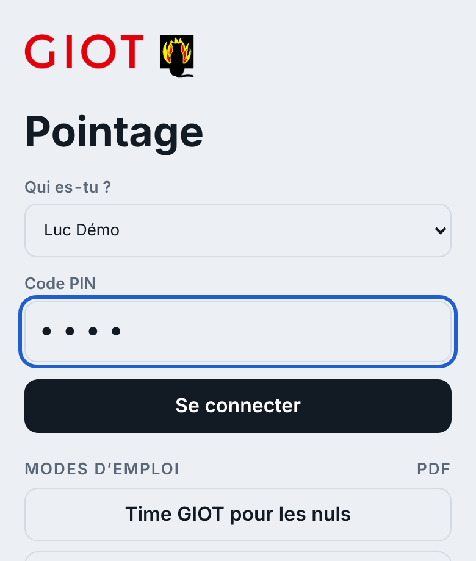
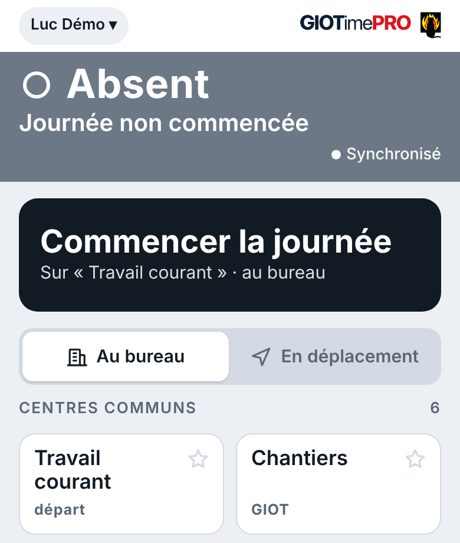
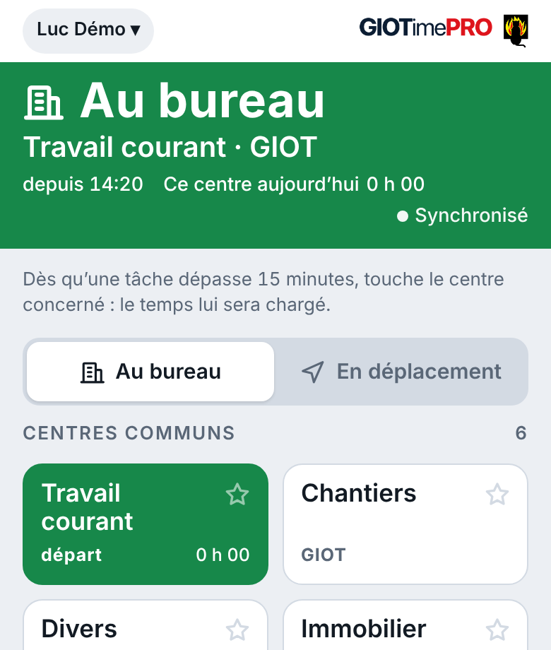
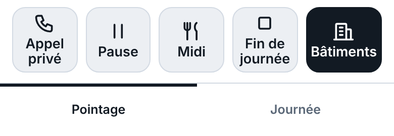

GIOTimePRO pour les nuls
Ta journée en six gestes. Le mode d’emploi complet est sur la même page du site.
Version 6 du 25 novembre 2026 · GIOT Immobilier SA

Ouvre www.le-top.ch/time sur ton téléphone. Choisis ton nom, tape ton code PIN. Tu restes connecté ensuite.

En arrivant, touche Commencer la journée.

C’est le travail de tous les jours : e-mails du matin, rangement, lecture, petites tâches de moins de 15 minutes.

Un travail de 15 minutes ou plus pour une adresse ? Touche Bâtiments, en bas à droite, puis l’adresse. Hors de Chalets 3 : En déplacement.

Touche Pause, Midi ou Appel privé. Au retour, touche Reprendre : tu repars sur le même centre.

En partant, touche Fin de journée. C’est le seul geste qui arrête le compteur : ne l’oublie pas.